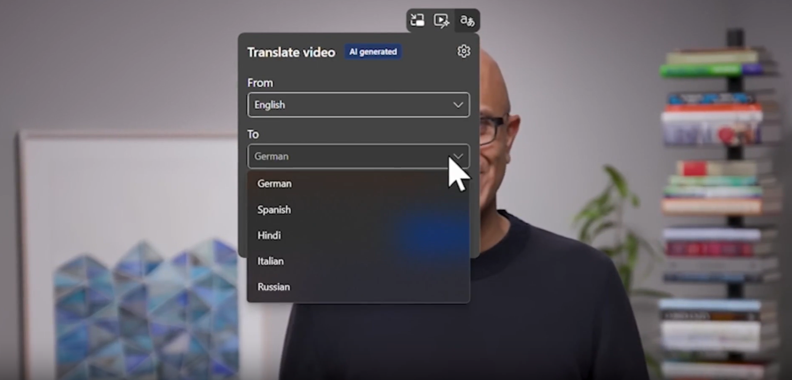
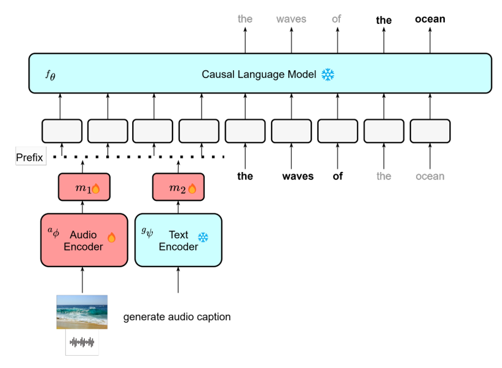

I'm an Applied Scientist on the Microsoft Speech team, working on speech and audio processing.
My work focuses on building audio processing technology to reduce communication barriers and enabling seamless interactions. This ranges from front-end audio processing like speech enhancement to building general purpose audio assistants. My research gets deployed in products like Teams, Edge, Outlook.
Previously, I received my masters degree from Carnegie Mellon University, MLSP Group and advised by Bhiksha Raj. I completed my B.Tech from VJTI, working on NLP.
Collaborations: If you have questions or want to collaborate with me, feel free to email me.Links: Google Scholar • GitHub • Twitter • LinkedIn
|
Front-end Audio Processing
Audio processing on the edge/client side i.e. before audio is sent to the server for further processing. This includes tasks such as speech enhancement, background estimation, echo cancellation: |
 |
|
Audio-Language Models
Grounding the LLMs in audio modality will enable models which can perceive (hear), analyze, and interact with users through natural language. By grounding language in audio, we aim to learn a rich audio-text representation that can enable various multimodal applications like text queried- retrieval, captioning, generation and question-answering |
 |